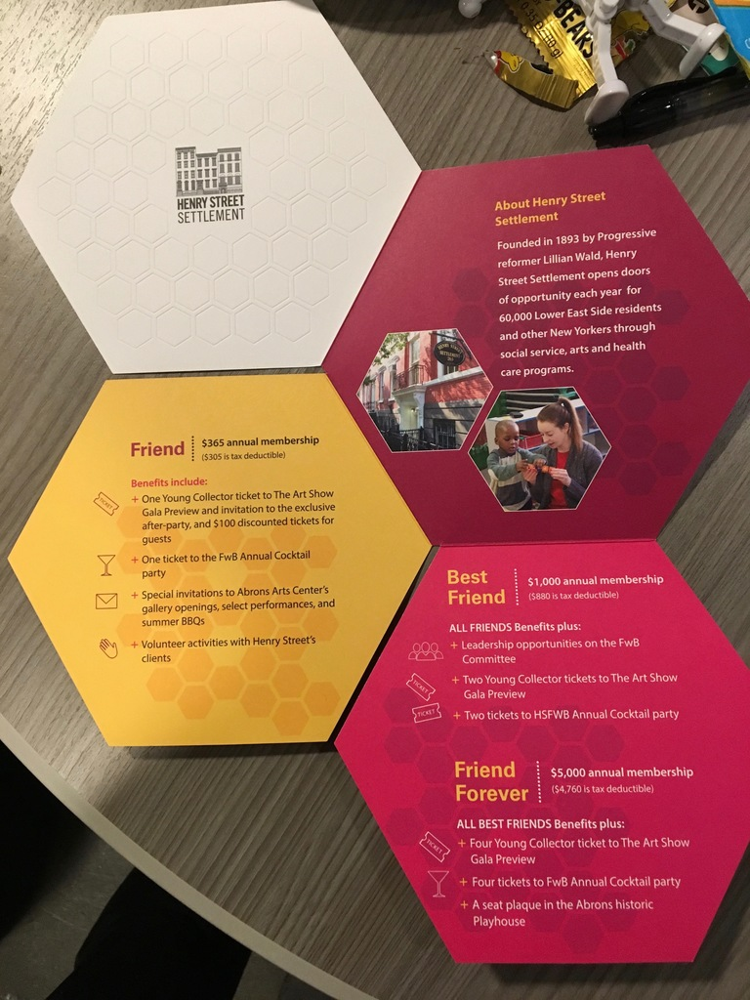

Process

Background on the Hackathon
Background on the Hackathon and my team:
The Hackathon was held by Beyond for the benefit of Henry Street Settlement, a New York-based nonprofit that delivers a wide range of social services, arts, and healthcare programs for more than 60,000 people each year. Henry Street focused their outreach on New York’s Lower East Side.
At the event, Henry Street gave participants a choice from eight different problems the organization was encountering that they felt could be addressed through strategic application of technology. The solutions presented by hackathon participants were going to be judged on the following criteria:
- Business Impact
- User Impact
- Technical Feasibility
- Usability
My group ultimately chose to work on the Youth Opportunity Hub, an outreach program targeting disengaged youth on the Lower East Side.
My team
The complete Hackathon team, "The Magnificent Eight."
Discovery
Background on the Youth Hub:
Youth Opportunity Hubs are an initiative sponsored by the Manhattan District Attorney’s Office of Criminal Justice initiative. They are programs designed to provide “one-stop” support for at risk youth (ages 13 - 24) who are believed to be at risk of becoming involved in the criminal justice system.
The Henry Street Settlement partnered with five other organizations to launch a Youth Opportunity Hub serving teenagers and young-adults on the Lower East side (the other partners are the Chinese-American Planning Council, Educational Alliance, Grand Street Settlement, Hamilton-Madison House, and University Settlement). Together, they offer a range of program for youth, including:
- Help finding a job
- Help returning to school, getting a GED or getting into college
- Mental health support
- Basketball, soccer, baseball and more
- Fun trips and community events
- Financial planning and access to resources
With this context, we were ready to find out about the specific needs of the Lower East Side Youth Hub, and how technology could help them.
Stakeholder Interview
Our first order of business was to interview Matt Phifer, a Deputy Program Officer of Education and Employment at Henry Street, who was able to give us more detailed context on the specific struggles the organization was having with the Youth Hub.
Matt was incredibly generous with his time, and took us into great detail about the struggles his organization was having tracking the success of the Hub. From this conversation we identified some critical pain points:
Inability to track and manage event attendees: The Youth Hub is being sponsored by multiple organizations who held responsibility for different types of events or resources. This made it hard for them to track a Client’s experience across the Hub. For instance, if a client met with a social worker who recommended they go to a resume workshop, it was hard for that social worker to know if they ended up attending it. It was also difficult for organizations to recognize if a Client was new to the Hub or returning. To illustrate this, we learned that although Matt knew that 112 Clients had participated in Youth Hub events, only 40 had open cases.
Difficulty in identifying trends and areas of interest: Organizers might not know until the moment an event is happening how many people are coming or interested. Being able to see RSVPs on an app would help them know which events attract more interest ahead of time. Moreover, by using a ticketing system on the app they would not have to worry about manually signing in attendees and following up with them later, but would have all their information in one place already.
Challenges in getting youths interested and retaining interest in Henry Street and partner events and activities: This highlights a problem that is not unique to Henry Street--it’s hard for institutions to reach out to young people in a way that seems authentic and interesting. Matt thought an App would help potential clients keep track of Youth Hub events using resources they are already comfortable with (i.e. a cell phone).
A solution to these problems had to both make it easy and rewarding for Youth Hub participants to engage with the Hub using resources they already had available (i.e. a smartphone) and make it easy for social workers, program coordinators, and stakeholders in each of the organizations sponsoring the event to track information. With this information, we outlined our objectives:
- Accessible via smartphone (native app / web app)
- Ease of use (familiar UI settings)
- Technically scalable and easy to maintain
- Timely distribution of information
- Collect user information (demographics and statistics)
- Change the stigma of “social work” as a charity to more of an open rec center vibe
User Stories
We knew we were designing for two users: the youth participants in the program, and the representatives of the organization managing the program. Accordingly, we developed two personas that could be representative of these groups:
Our two users stories.
We chose age 18 for Ron because it was a threshold age that would make him conceivably accessible for programs aged at young adults (career development) and teenagers (e.g. education). We also opted to make him partially homeless as Matt had highlighted housing insecurity as being a frequent issue for youth in the program, which made things like asking for an address difficult and potentially fraught for users who were being onboarded.
Chelsea was representative of all the employees of the organizations involved in sponsoring the Youth Hub. We chose to make her a social worker as Matt had highlighted them as being hands on and mobile in their work and outreach, and also primary points-of-contact for youth in the programs.
Plan
User Flows
To aid the planning process, we mapped out all the interactions between Chelsea and Ron in our consolidated User Flows, and identified points where they could be enabled by technology.
Early brainstorming of our user flows on the whiteboard.
Our finalized User Flow.
We then tried to break down this general relationship map into the specific needs of each participant:
Feature Prioritization
Since we were working with limited time in a Hackathon environment, it was critical that we come to a consensus on feature prioritization before we began building the solution.
Must Have |
Could Have |
Should Have |
|
|
|
Wireframes
As we were working with a limited timeframe, we prioritized the five screens we needed to design to present to the judges:
Our hastily drawn wireframes.
Ultimately, we decided to do hi-fi prototypes of the login page, the Client home page, the Client profile page, an event details page, and a visualization of the main landing page for Organizers.
Design
Visual Design
We used the colors on in an informational brochure about the Youth Hub inform our color pallet.
We also used the format of this brochure to inform some of our aesthetic decisions within the app. Most notably, the hexagon shape of the brochure designed to underscore a “hive” motif in the marketing--we utilized this hexagon in the profile images of the app later.
Our team had multiple UX Designers, so after agreeing to a color palette and font structure we were able to breakout separately to design the high fidelity mockups.
High Fidelity Mockups
My individual contribution to the high-fidelity mockups was designing the event details page. I knew Matt wanted his youth users to utilize this app the way they would Facebook or any other app, so from the beginning it was incredibly important to me that this page be laid out in a way that was familiar for its users.
Accordingly, I conducted a very quick benchmark of the event details page on a Facebook event, a Meetup event, and an Eventbrite.
Comparing the event details of three different apps.
I used this to prioritize the information that should be on the event details page:
- Event image
- Title
- RSVP Options
- Date & Time
- Location
- Event Details Preview
- Tags
- Host
- Other Attendees
- Map with Event Location Highlighted
- Other Suggested Events
Once I had these prioritized I sketched some initial ideas for the screen.
However, after regrouping with my teammates and reviewing their pages, we decided as a group that the ticket scanning function should go on the event detail page instead of the user’s profile page. This would help users who RSVPed to multiple events keep track of their tickets. This feature is incredibly important to the app, as it would allow social workers like Chelsea to more easily keep track of who attended events.
Results
Final Presentation
Our team presented our final project proposal to judges from Beyond and Henry Street Settlement. The important aspects were that we were able to scale the technological requirements to the capabilities of the Henry House Settlement house while also serving the needs of both the youth users and the organizations.
In terms of concrete deliverables, while the time-limits of a hackathon did not allow us to turn in a final polished product, it did allow for some strong initial high fidelity mockups:
The login page for the app.
Landing page for Client users.
Client users profile page.

The landing page for Organizers.

Organizer dashboard visualization.
Our developers were also able to begin to envision the functionality of the final apps as well. While these prototypes were preliminary, they were a solid foundation to the final apps.
Ultimately, our group came first-runner-up in the Hackathon.